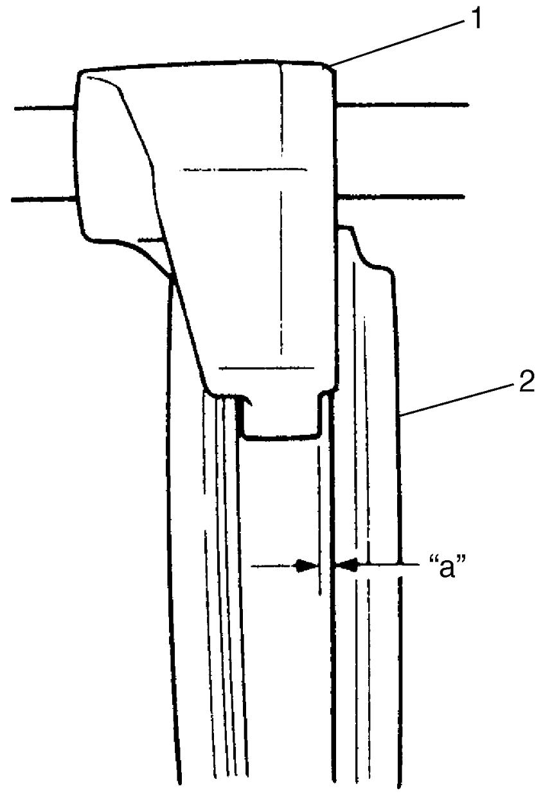

5B
| Gear Shift Shaft and Fork Inspection |
1)Using feeler gauge, check clearance between fork (1) and sleeve (2) and replace those parts if the clearance exceeds limit of 0.4 mm (0.016 in.).

NOTE:
For correct judgement of parts replacement, carefully check contact portion of fork and sleeve.
Clearance “a” between fork and sleeve
Standard: 0.55 – 0.75 mm (0.022 – 0.030 in.) (high speed gear)
Standard: 0.05 – 0.25 mm (0.002 – 0.010 in.) (except high speed gear)
Service limit: 0.4 mm (0.016 in.)

 "Expand image")
2)Insert each gear shift shaft into case and check that it moves smoothly. If not, correct burns or dents with oilstone, reamer or the like.